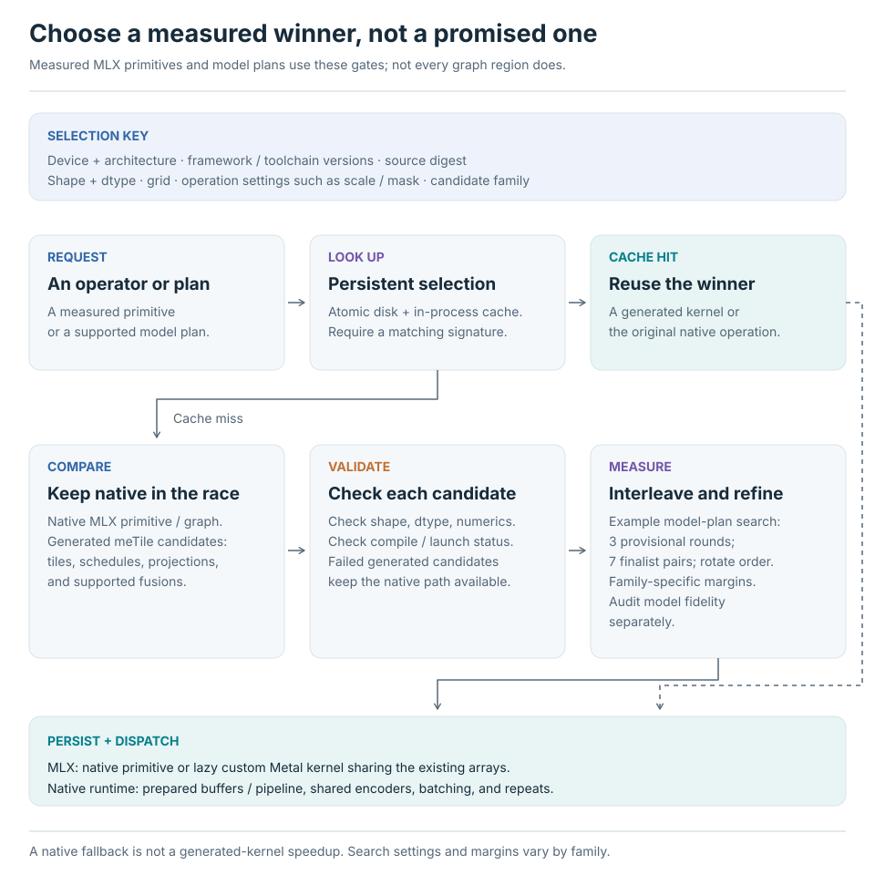

MLX-LM Backend¶
The optional MLX backend executes generated Metal kernels in MLX’s lazy graph and uses MLX arrays directly. For every supported operation, native MLX remains a candidate. The integration selects a generated kernel only after numerical checks and timing comparisons.
python -m pip install -e ".[mlx-lm]" -e ./kernels
The integration requires both the root compiler project and the separate
metile-kernels library. Installing the root project’s MLX dependencies alone
does not install the library from this checkout.
Patch a model¶
The patch handle restores the original methods when its context exits:
import mlx.core as mx
from mlx_lm import load
from metile.integrations.mlx_lm import apply_metile_to_mlx_lm
model, tokenizer = load("mlx-community/Llama-3.2-1B-Instruct-4bit")
tokens = mx.array([tokenizer.encode("Explain tiled matrix multiplication.")])
with apply_metile_to_mlx_lm(model=model):
logits = model(tokens)
mx.eval(logits)
Evaluate lazy results while the patch is active. You can also keep the handle
and call patch.restore() explicitly. Set attention=False,
rms_norm=False, graph_fusion=False, or quantized_mlp=False to disable
individual features. Unsupported calls use the original implementation.
Decode attention supports BF16, FP16, and FP32 MHA, GQA, and MQA with a one-token query. Prefill attention, masks, sinks, quantized KV caches, and unsupported dimensions retain MLX-LM’s implementation. RMSNorm supports those storage types with FP32 accumulation.
For supported transformer residual-add/RMSNorm patterns, the graph planner preserves the residual as a second output. The backend compares the fused operation with the original graph before choosing it. See Compute-Graph Fusion for matching and region-selection limits.
Prepare projection backends¶
Projection backends require explicit preparation because they may allocate additional weight views. For supported affine 4-bit projections, prepare a K-major repack:
from metile.integrations.mlx_lm import prepare_mlx_lm_affine_prefill
affine_prefill = prepare_mlx_lm_affine_prefill(model)
with apply_metile_to_mlx_lm(model=model, affine_prefill=affine_prefill):
logits = model(tokens)
mx.eval(logits)
Repacking preserves the original nibbles, scales, and biases. The backend compares supported row tiles and traversal orders with native MLX, using row masks for incomplete tiles. Prepared prefill projections restore their original class when the row count falls below the configured threshold. Restore each patch before applying a different configuration to the same model.
For dense BF16 or FP16 checkpoints, use the dense preparation path:
from metile.integrations.mlx_lm import prepare_mlx_lm_dense_mlp
model, tokenizer = load("mlx-community/Qwen2.5-1.5B-Instruct-bf16")
dense_mlp = prepare_mlx_lm_dense_mlp(model)
tokens = mx.array([tokenizer.encode("Explain tiled matrix multiplication.")])
with apply_metile_to_mlx_lm(model=model, dense_mlp=dense_mlp):
logits = model(tokens)
mx.eval(logits)
Dense preparation builds K-major gate/up views and, when the memory budget allows, an interleaved gate/up view for decode. By default, estimated model weights and repacked views must fit within 80% of MLX’s recommended working set. The paired decode view can be omitted independently.
One-row dense candidates share activation loads across gate and up dot products, then apply SwiGLU before the output store. They vary output count, SIMD-group count, and K unrolling while preserving the checked lane partition and reduction order. Exact QMV candidates must match MLX bit for bit and pass pairwise finalist timing against native MLX. Gate/up confirmation uses 63 rounds for one row and 31 for multiple rows. The down-projection/residual candidate is selected independently, so either stage can retain native MLX.
Small batches can also use the SIMD-group QMV candidates when their shapes satisfy the register and alignment limits. Each row must match MLX’s own single-row result bit for bit; MLX’s batched implementation may use another reduction order. At larger row counts, supported candidates include two generated projections followed by the MLX epilogue and a fused dual-GEMM schedule. The fused BF16 path preserves MLX’s low-precision boundaries in sigmoid and the two products. Numerical and model-level checks determine whether a candidate can be used for the call.
Quantized SwiGLU compares eager MLX, compiled MLX, and generated schedules in the same way. One generated schedule writes the gate accumulator to threadgroup scratch, reuses its registers for up, then applies the epilogue. Measurements include its storage and barrier costs.
Selection and fallback¶


Each primitive family has a switching margin: a generated candidate must be faster by at least that amount to replace the baseline. The current settings below may differ from the policy used in a saved benchmark:
Family |
Required headroom |
|---|---|
Attention and RMSNorm |
5% |
Graph fusion and block-scaled matmul |
10% |
General dense/affine generated projections and quantized SwiGLU |
3% |
Compiled-MLX quantized SwiGLU |
3% |
Exact dense gate/up QMV and dense down/residual QMV |
1.5% |
Affine down/residual QMV |
1% |
The backend caches selections by device, MLX version, dtype, shape, source, and candidate policy. A cached native decision bypasses the generated paths and calls the original operation directly. The backend also keeps that operation when compilation or numerical checks fail, or when the measured gain falls short of the switching margin.
Use autotune_metile_for_mlx_lm to compare feature combinations on an actual
model trajectory. It rejects plans that change the next token or exceed
KL-divergence, mean-logit-error, or maximum-logit-error bounds. It measures
related plans in stages, then checks finalists on a separate holdout of at
least 32 decode steps and seven paired trials before saving the selection.
Winning kernels do not necessarily make a winning model plan: their composition
can still be rejected. The result is specific to the model, calibration
workload, device, and backend policy.
Optional weight compression¶
Unlike repacking, compression changes the weight representation. The affine-INT8 path keeps source BF16 weights and prepares compressed copies for selected one-row decode projections. Multi-row prefill continues to use the original projections.
For a dense model, prepare and calibrate the down projections:
from metile.integrations.mlx_lm import (
autotune_metile_for_mlx_lm,
prepare_mlx_lm_compressed_down,
)
compressed_down = prepare_mlx_lm_compressed_down(model, format="affine8")
sample_tokens = mx.array([tokenizer.encode("Explain tiled matrix multiplication.")])
plan = autotune_metile_for_mlx_lm(
model, sample_tokens,
quantized_mlp=False,
compressed_down=compressed_down,
)
patch = apply_metile_to_mlx_lm(
model=model,
quantized_mlp=False,
compressed_down=compressed_down,
plan=plan,
)
The strict affine-INT8 calibration policy requires an unchanged next token,
KL divergence at most 0.001, mean logit error at most 0.05, and maximum logit
error at most 0.5. This permits bounded error; it does not establish bitwise
equivalence or accuracy on untested prompts. MXFP8 requires
allow_approximate=True and has a separate, looser policy.
Other independently selectable preparation functions are:
prepare_mlx_lm_compressed_gate_up: keeps each layer’s SwiGLU pair together.prepare_mlx_lm_compressed_attention: groups Q, K, V, and output projections by layer and preserves projection biases.prepare_mlx_lm_compressed_vocab: handles a tied embedding’sas_linearprojection or an untiedlm_head; embedding lookup remains unchanged.
Pass each prepared object to both the model tuner and the patch function. Calibration may keep sensitive layers in BF16 or reject an entire feature if it fails the checks when combined with the others.
Affine groups of 32, 64, and 128 are available. The default
group_size="auto" times compatible groups at the one-row projection shape.
Attention additionally considers error among groups close to the fastest.
Layer selection uses bounded prefix/suffix searches, local audits, and holdout
checks. Compressed families default to a 90% working-set ceiling and stage
group candidates sequentially. Source weights remain allocated for fallback.
Block-scaled matmul¶
MLXBlockScaledWeight supports K-major MXFP4 and MXFP8 weights:
from metile.backends.mlx_block_scaled import (
MLXBlockScaledWeight,
mlx_block_scaled_matmul,
)
weight = MLXBlockScaledWeight.quantize(dense_k_by_n, format="mxfp8")
output = mlx_block_scaled_matmul(activations, weight)
Here dense_k_by_n and activations are MLX arrays. The weight object
keeps both the compiler’s K-major layout and MLX’s native packed layout.
Generated candidates combine scale/value decoding, register fragments,
matmul2d, row masks, and traversal schedules. FP16 and BF16 arrays use
native Metal storage types. The selector checks compatibility and requires
10% headroom before choosing generated work over the native packed candidate.
METILE_DISABLE_DISK_CACHE=1 python -m benchmarks.kernels.block_scaled_gemm 2048
Read and reproduce model results¶
Benchmarks collects model charts, recorded results, and comparison rules. What a comparison tells you depends on the weight representation:
Matched weights: both implementations use the same values and format. Repacking without requantization belongs here.
Matched quantization: both implementations use the same quantized weights, scales, and biases. This isolates their execution paths.
Mixed precision: the selected meTile plan uses compressed projections while native MLX reads source BF16 weights. This measures a deployment tradeoff and cannot establish a BF16 kernel speedup.
The seven-model BF16-source capacity suite belongs to the third class. Selected
affine-INT8 projections execute through MLX mx.quantized_matmul. Its decode
gains include reduced weight traffic, and no matched affine-INT8 model control
suite is committed. Fidelity bounds apply to the recorded trajectories.
The suite runner records preparation, model-plan tuning, confirmation, and steady-state measurement separately. Results identify the selected native or generated paths and include raw samples, software identities, and MLX allocator peak memory. If the selected plan is entirely native, both labels share its sample.
python -m pip install -e ".[mlx-lm,benchmarks]" -e ./kernels
python -m benchmarks.mlx.mlx_lm_suite \
--prompt-tokens 128 --generation-tokens 256 \
--trials 9 --delay 0 --plan-trials 7 --confirmation-trials 5 \
--output /tmp/mlx-models.json
Use --suite bf16 for the dense source suite and --offline for cached
checkpoints. Compression requires explicit flags such as
--compressed-down-format affine8, --compressed-gate-up,
--compressed-vocab, and --compressed-attention. Each family has a
--compressed-...-group-size option. Use the corresponding
--disable-attention, --disable-rmsnorm, --disable-graph-fusion,
--disable-quantized-mlp, or --disable-affine-prefill flags for ablations.